OUM |
WebCenter Supplemental Guide |
||
Method Navigation |
Current Page Navigation |
||
|
|
||||||||
This document contains OUM supplemental task guidance for WebCenter projects.
The task guidelines in this document should be used to supplement the guidelines that appear in the OUM Task Overview.
Refine the Testing Requirements for the WebCenter project based on those requirements identified and further detailed in the Elaboration phase.
APPROACH
Develop the project direction in relation to testing. At a minimum, the Testing Strategy must address all of the requirements documented in the Testing Requirements (TE.005).
Specify the standards for all Documentation work products and determine the look and feel of the project documentation.
This task identifies the application and technical Requirements and documents the strategy to be used for the design and development of the system being implemented.
Address the following types of environments:
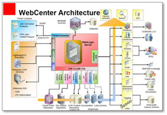
For WebCenter projects, it is recommended that the TA.020 work product be used as the master work product document for other TA work products by including or referencing the other TA work products.
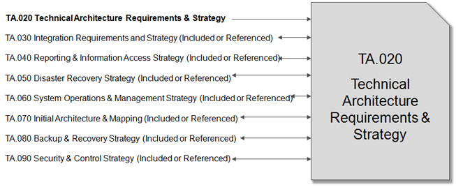
In a WebCenter implementation, the main goal of this task is to prepare a work product that can be used by the system administrator in order to install the system. The next iteration of this task in Construction will focus more on the specific system configuration (MC.050) and custom modules (DS.080).
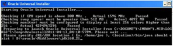
Create or verify the Development Environment that you will need during the development effort. It is highly recommended that this task is conducted following, or at the same time as, the initial iteration of the Installation Routines task (IM.090.1). Refer to the Construction phase iteration for this task to see additional guidance.
Prepare the required test data you will need throughout the project. This data should support prototypes (if required), unit tests (in the Development Environment), and any other tests. Refer to the Construction phase iteration for this task to see additional guidance.
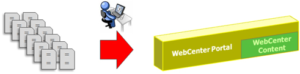
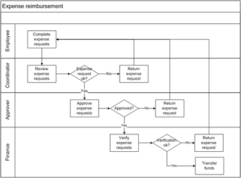
Define the Future Process Model (Future Business Model) in the form of integrated process flows based on the business processes supported by the new WebCenter system. The model is created through iterations, starting with a higher level view in the Inception phase (if available), and progressing into a more detailed view in later iterations.
Document the triggering events that drive the business areas that are to be automated and describe the future business process that the
business executes. The Future Process Model should include:
Following the Inception phase iteration(s), you should return to the Domain Model in Elaboration. In the next iteration of this task in Elaboration, add and associated any additional metadata fields or objects. You should also provide further information for each of the fields, such as, format and default values. Execute as many additional iterations of this task as necessary in order to compile the model prior to executing the task, Define Application Setups (MC.050). The following diagram shows a WebCenter Content example for defining the metadata.
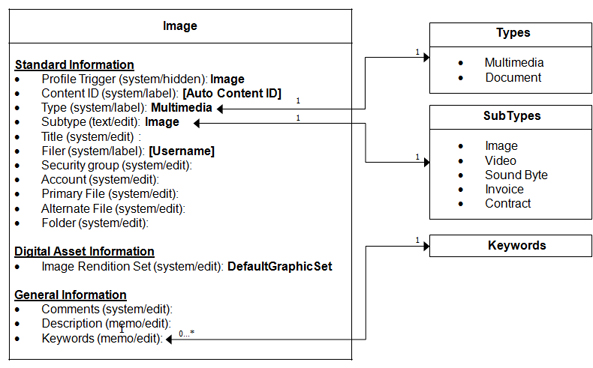
Assess the fit of the standard WebCenter product and system features to the detailed business requirements as reflected in the following work products:
Define and document the detailed setup values needed to configure the WebCenter product(s). Continually refine the work product during the Design activity. Refer to the Construction phase iteration for this task to see additional guidance.
For WebCenter engagements, the resulting work product forms a shared central document for retaining and managing general configuration settings for the system. This prevents conflicting configuration across design documents.
Option 1 - Create one master Application Setup Document that contains all of the individual inserted configuration documents.
Option 2 - Create one Application Setup Document for each type of configuration and link them together with a master index configuration document.
The work product could include:
As an example, you would first t take the Metadata Model produced in from the Domain Model (RD.065) task. Next, create a Metadata Configuration based on this model as part of the task, Define Application Setups (MC.050). Once complete, insert the configuration into, or reference the configuration from, the Application Setup Documents work product. Remember, you may need to update this configuration again in the future so it may be better to keep it as a separate document until the completed Application Setup Documents are ready for review.
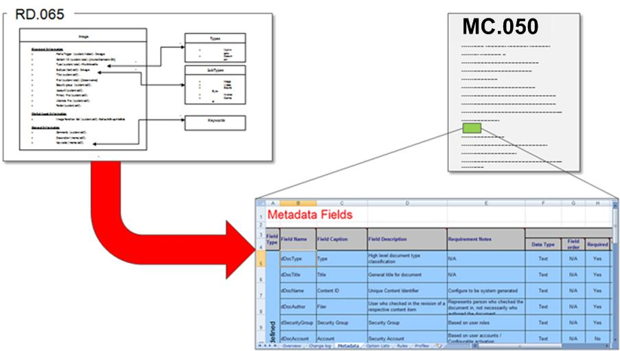
Following the mapping of business requirements (MC.030), if custom development is required to extend the standard capabilities of a WebCenter product, you must consider the various alternatives to satisfy them and estimate the effort required to complete them.
Review the alternative solutions for satisfying gaps with the organization and then identify and document the preferred option, based on the organization’s preference.
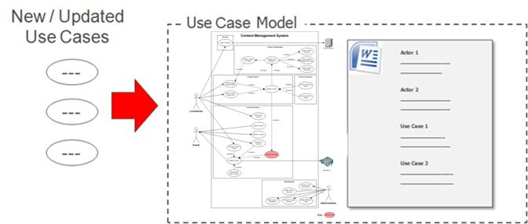
The Use Case Model should be refined to capture any new or updated use cases.
the purpose of the Conceptual Prototype is to visually show the users your understanding of an agreed to set of requirements. This is a mock-up prototype and is usually created using low-fidelity tools, such as sketches on whiteboards or flip charts that represent the general idea behind the user interface but not the details.
In a WebCenter implementation, this task is generally performed only when there is a need to gain further clarification of the business requirements represented in the use cases.
Important Note: This task should not be used to produce the overall storyboard and wireframes for a WebCenter system. Such work products should be produced in the task, Analyze User Interface (AN.090).
WORK PRODUCT
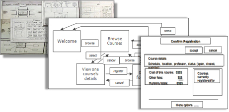
Review and refine the Glossary in order to ensure that all terms are identified and correctly defined.
Review and refine the MoSCoW List in order to ensure that all use cases are identified, correctly defined and prioritized.
The following diagram indicated the recommended work products in Elaboration, in addition to those identified in Inception, that should be added to the Requirements Specification, either through links are added directly to the document.
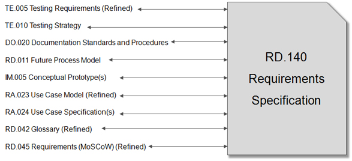
This optional task highlights business rules as statements that describe business policies. For example, a piece of content submitted into a system by a contributor should always go into a workflow to attain management sign-off before being released.
This task is recommended if you need to include WebCenter Records retention lifecycle type of rules, i.e., taking the organization's records policy and making a concise set of rules.
Review the Use Case Model (RA.023 and RA.024) in conjunction with the MoSCoW List (RD.045) in order to ensure that all use cases are identified and have the correct relationship to each other.
This task is recommended in order to prioritize and group the use cases / processes. It establishes an initial set of groupings and priorities for the use cases that you have identified.
Identify the use cases that describe important or critical functionality or that involve requirements that must be developed early in the project. These use cases will be described as “architecturally-significant” and will be identified in the High-Level Software Architecture portion of the Architecture Description.
WORK PRODUCT
Establish an initial set of packages (iteration groups) and priorities for the use cases that you have identified.
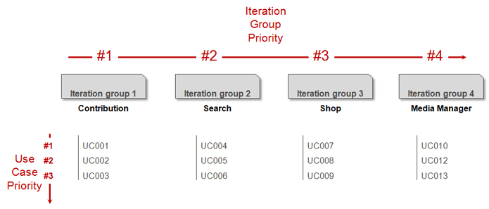
Use Case Specification documents should be produced for all functional requirements that are not present within the packaged software. This task should be completed regardless of the type of WebCenter project.
Allow plenty of time for the production of use case specification documents. Remember that a specification document must be produced for each use case that cannot be delivered out-of-the-box. The product specialist and business analyst work together to draft each document – this has proven to reduce the level of customization required for a use case.
The standard OUM work product template is sufficient for all WebCenter projects.
Note: Make full use of the Technology and Data Variations List section in order to eliminate the need for repeating such details in the scenario steps. This typically causes much confusion for not only the writer of the document but also for the reviewers.
Note: Make use of the Open Issues and Decisions sections within this document as you will typically find that this document is frequently reviewed prior to final approval. These sections allow you to track comments and decisions made in each revision.
Remember: The first step of the Main Success Scenario should be the same as the Trigger.
The purpose of this task is to develop a deeper understanding of the look and feel of the user interface as well as the flow that the users will experience when interacting with the system. In this task, you do not design how the user interface will work, but verify your understanding of the users’ needs and validate the feasibility of the functional requirements. This task is highly recommended when implementing WebCenter Portal or WebCenter Sites as it provides the business with a clear understanding of the web pages to be provided and their relationship to each other. It also provides the business with a view of the proposed page layouts and their relationship to use cases.
Note: You may need to go through multiple iterations of this task for WebCenter Portal and WebCenter Sites. Once the approach has been agreed, you should then move on to task, Design User Interface (DS.130).
AN.090 Storyboard and Wireframes
Assemble all the information that is required to describe a use case package into a complete Analysis Specification, ready for review. In general, there would be one of these specifications written for each use case package on a project. Prior to being passed on to the designers, the Analysis Specification is reviewed for defects and, as necessary, the defects are corrected.
The diagram below indicates the recommended work products that should be referenced from, or included within the Analysis Specification.
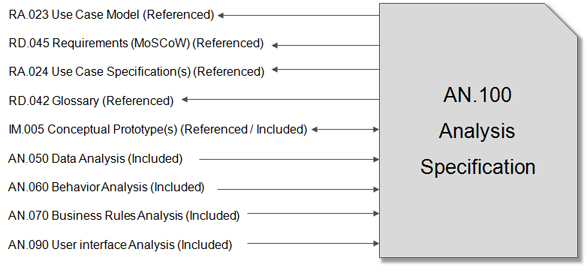
For larger size projects it may be necessary to use a document structure similar to the following:
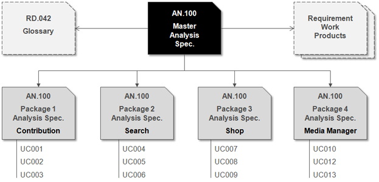
The Analysis Model refers to the complete collection of work products that are developed as part of analyzing the use cases during Analysis. Once work on these materials for a given iteration has been completed, and the materials are ready for review, a team consisting of analysts, users, designers, and architects reviews the Analysis Model, and suggest changes as needed.
Create and complete a short Approval template where approval can be inserted into a grid.
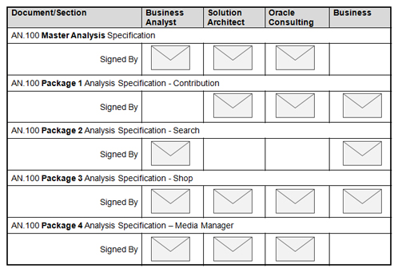
Develop the detailed design for a software component. For WebCenter products, a software component is a custom module that contains a number of interoperating processes or classes that work together to perform the high-level functional responsibilities for a major part of the system.
Each document should include:
The purpose of this task is to transform the storyboards and wireframes in the User Interface Analysis (AN.090) and specify how they will be implemented. You also specify the navigation sequences between each of the interfaces in the storyboard(s). This task is highly recommended when implementing WebCenter Portal or WebCenter Sites as it provides the final design for the portal or website to be developed.
It is recommended that either of the following approaches is used to satisfy this task:
The following artifacts should be considered as part of this task:
Typically, the User Interface Analysis (AN.090) is enhanced to show the detailed design.
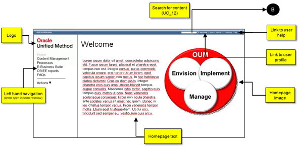
Assemble all the information that is required to describe the design of the system into a complete Design Specification, ready for review. Prior to being passed on to the developer, the Design Specification is reviewed for defects and, as necessary, the defects are corrected.
This artifact collects all of the Design work products into a single document and equates roughly to the “technical design document” that was used in some older methodologies.
The Design Specification should include:
The diagram below indicates the recommended work products that should be referenced from, or included within the Design Specification.
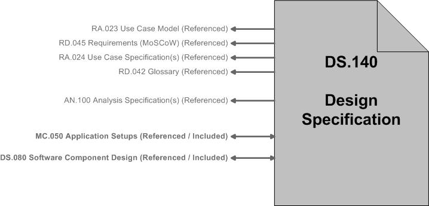
For larger size projects it may be necessary to use a document structure similar to the following:
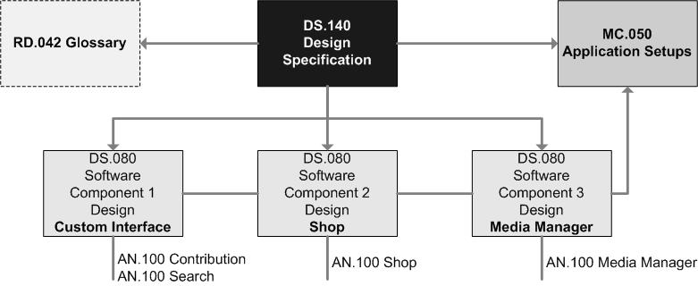
The Design Model refers to the complete collection of artifacts that are developed to design the software to be developed. Once work on these materials for a given iteration has been completed, and the materials are ready for review, a team consisting of analysts, designers, and architects review the Design Model, and suggest changes as needed.
Create and complete a short Approval template where approval can be inserted into a grid.
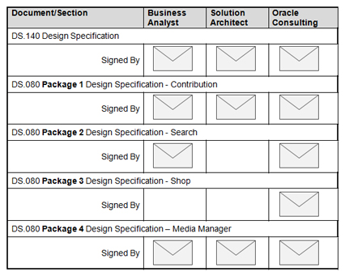

Copyright © 2006, 2016, Oracle and/or its affiliates. All rights reserved.